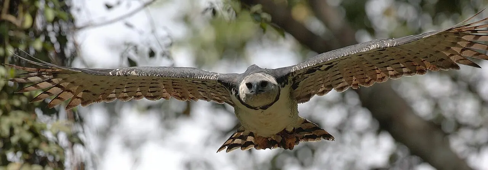
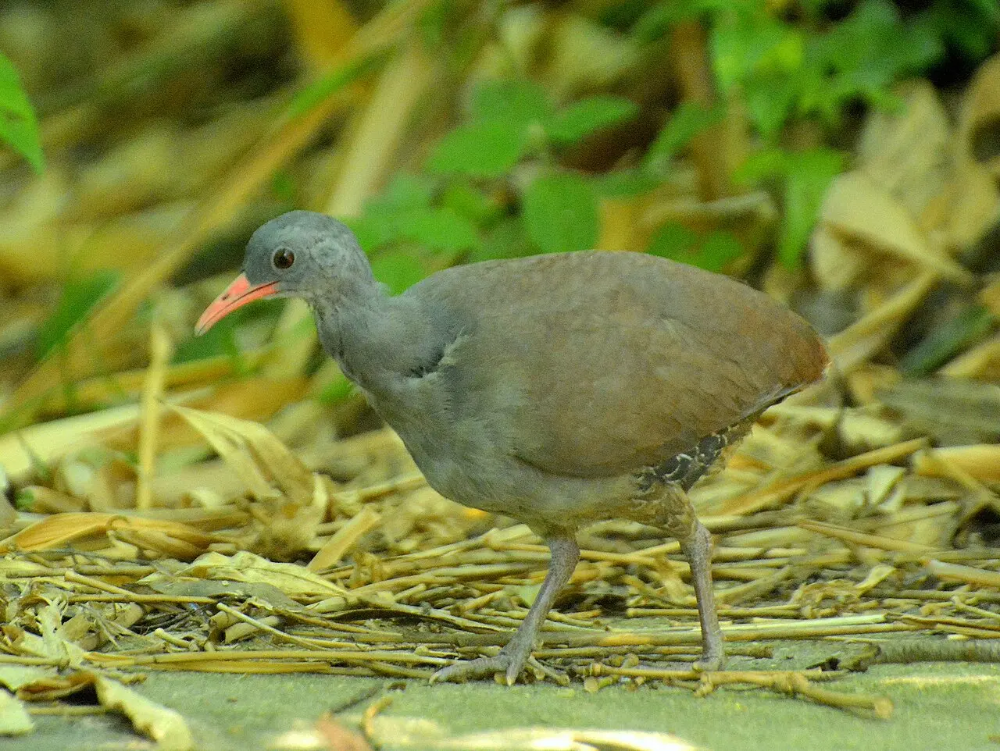
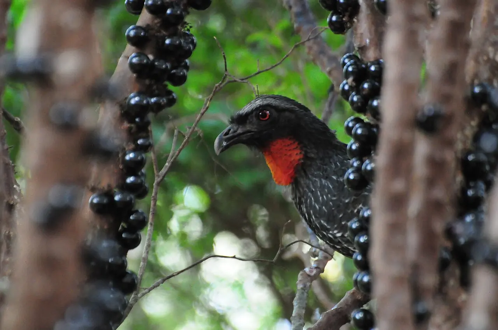
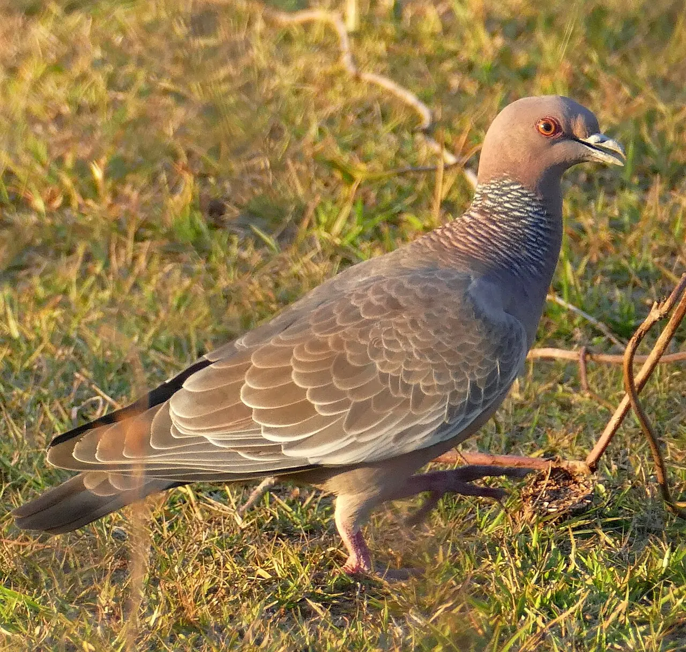
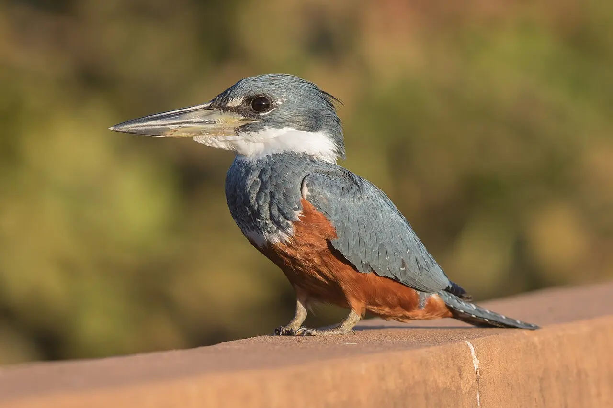
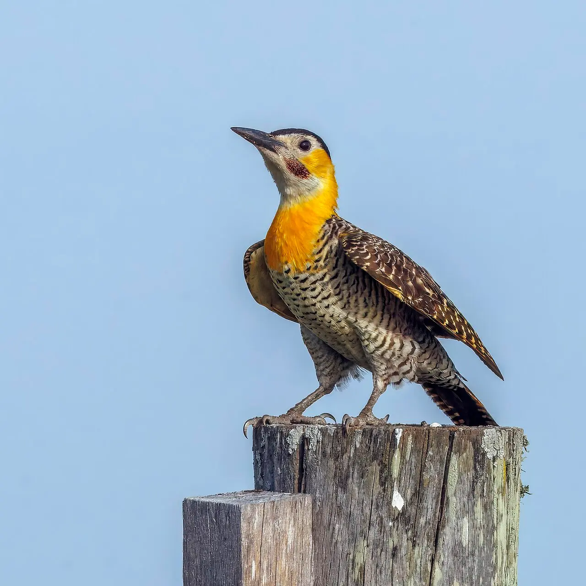

Módulo 1 Aula 5
Diversidade brasileira
O Brasil está entre os países com mais espécies de aves do mundo. Para não se perder em tanta variedade, os cientistas organizam as aves em grupos.
- Quantas aves existem no Brasil e quem conta
- Como as aves são organizadas em grupos (ordens)
- Como reconhecer os principais grupos por exemplos

Ave da aula
Harpia Harpia harpyja
Quantas espécies
Quem faz a lista oficial das aves do Brasil é o . Na edição de 2021, a lista registrou 1.971 espécies com presença confirmada no país[1, 2]. Seis anos antes, em 2015, eram 1.919: foram 52 espécies a mais em seis anos[2].
O número não é fixo. Ele muda quando se descobrem espécies, quando espécies são separadas ou juntadas e quando aves raras são registradas pela primeira vez. Para o número mais recente, consulte a lista atualizada do CBRO[3].
Os grandes grupos
Os cientistas juntam as espécies parecidas em , os gêneros em famílias e as famílias em [4]. Os nomes das ordens terminam em “-formes”. A classificação muda com o tempo, e alguns grupos que aparecem juntos aqui podem ser separados em outras listas[1].
Escolha um grupo para ver um exemplo brasileiro.

Inhambus e perdizes
Tinamiformes
Aves discretas, de corpo arredondado, que vivem no chão da mata ou do campo e voam pouco.
Exemplo: inhambu-chintã (Crypturellus tataupa).

Ema
Rheiformes
Ave grande, que não voa e vive nos campos e cerrados. Corre bem, com as pernas longas.
Exemplo: ema (Rhea americana).

Jacus e mutuns
Galliformes
Aves de porte médio a grande, que vivem em matas e comem frutos. Parentes das galinhas e dos perus.
Exemplo: jacu-de-barriga-castanha (Penelope obscura).

Pombas e rolinhas
Columbiformes
Aves de bico curto e corpo roliço.
Exemplo: pomba-asa-branca (Patagioenas picazuro).

Anus e cucos
Cuculiformes
Aves de pés [6]. Voltaremos aos anus na aula 22.
Exemplo: anu-preto (Crotophaga ani).

Beija-flores
Apodiformes
Aves pequenas, de bico fino e voo pairado. Vivem só nas Américas.
Exemplo: beija-flor-tesoura (Eupetomena macroura).

Garças, colhereiros, guarás
Pelecaniformes
Aves de áreas alagadas, com pescoço e bico longos, que pescam ou procuram comida na água rasa.
Exemplo: colhereiro (Platalea ajaja).

Tuiuiú e cegonhas
Ciconiiformes
Grande ave de áreas alagadas, como as do Pantanal, de bico longo e pernas altas.
Exemplo: tuiuiú (Jabiru mycteria).

Gaviões, águias e urubus
Accipitriformes (e Cathartiformes, no caso dos urubus)
Aves de rapina de dia, de bico em gancho e garras fortes. Os urubus, que comem carniça, hoje formam um grupo à parte.
Exemplo: gavião-carijó (Rupornis magnirostris).

Corujas
Strigiformes
Aves de olhos grandes voltados para a frente e, em geral, de hábitos noturnos. A buraqueira é também ativa de dia.
Exemplo: coruja-buraqueira (Athene cunicularia).

Martins-pescadores
Coraciiformes
Aves de bico longo e reto, que mergulham para pescar.
Exemplo: martim-pescador-grande (Megaceryle torquata).

Pica-paus e tucanos
Piciformes
Aves de pés zigodáctilos[6]: os pica-paus trepam em troncos, e os tucanos têm bico enorme.
Exemplo: pica-pau-do-campo (Colaptes campestris).

Papagaios e araras
Psittaciformes
Aves de bico curvo e forte, pés zigodáctilos e plumagem colorida. As cacatuas, que veremos no módulo 7, fazem parte desse grupo.
Exemplo: arara-vermelha-grande (Ara chloropterus).
De que grupo é?
Agora é com você. Olhe a foto e escolha o grupo.
Coruja-buraqueira
A que grupo pertence?
Tuiuiú
A que grupo pertence?
Beija-flor-tesoura
A que grupo pertence?

Bem-te-vi
A que grupo pertence?
Palavras novas
Teste rápido
Sem nota. Se errar, tente de novo.
Quem mantém a lista oficial das aves do Brasil?
O que é uma ordem, na classificação das aves?
Qual é a maior ordem de aves?
Referências e leitura complementar
Onde conferir o que foi dito nesta aula. Os números entre colchetes no texto levam a estas fontes. Os links abrem em outra aba.
- Annotated checklist of the birds of Brazil by the Brazilian Ornithological Records Committee, second editionOrnithology Research (2021) · inglêsA lista oficial do CBRO de 2021, com 1.971 espécies confirmadas no Brasil.
- Listo, logo existo: CBRO divulga nova Lista de Espécies de Aves do Brasil((o))eco · português · leitura complementarReportagem sobre a lista do CBRO e o aumento de espécies.
- Listas de Aves do BrasilCBRO · Comitê Brasileiro de Registros Ornitológicos · português · leitura complementarA lista oficial e atualizada das aves registradas no Brasil.
- Bird – Aves, Species, OrdersEncyclopaedia Britannica · inglêsAs ordens de aves e como são classificadas.
- PasseriformEncyclopaedia Britannica · inglêsA maior ordem de aves: mais da metade das espécies conhecidas, com pés que seguram galhos.
- ZygodactylyEncyclopaedia Britannica · inglêsPé com dois dedos para a frente e dois para trás.
Os endereços foram abertos e conferidos em 29/09/2026. Alguns sites de revistas científicas e de órgãos oficiais exigem verificação humana e não puderam ser testados por robô. Sites externos podem mudar ou sair do ar.
Para levar
Em três frases
- O Brasil tem quase 2 mil espécies de aves, e a lista oficial do CBRO cresce com novas descobertas.
- As aves são organizadas em ordens: passeriformes, beija-flores, pica-paus, papagaios, corujas, gaviões e outras.
- Muitos grupos se reconhecem por traços simples: pés, bico, tamanho e hábitat.